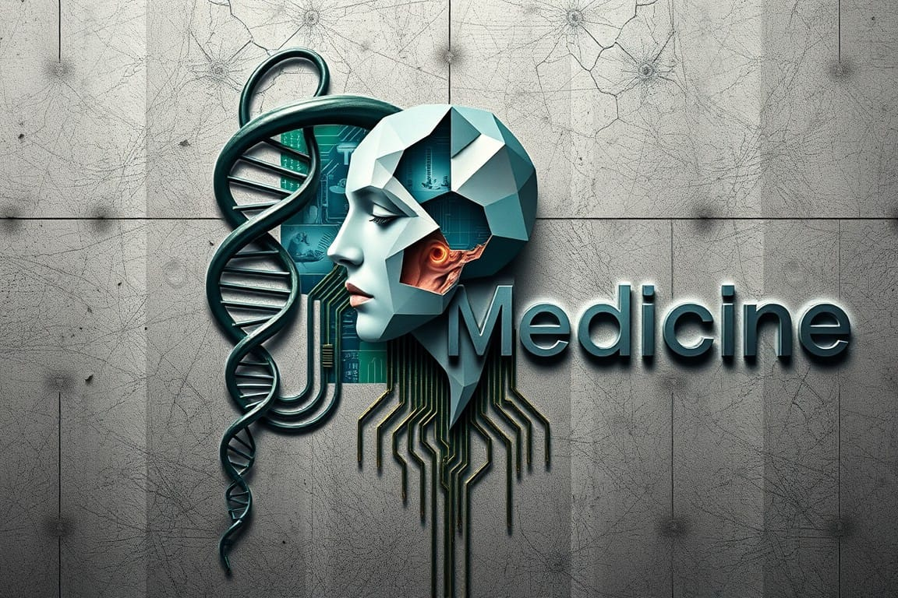

The AI Revolution in Healthcare: Reshaping the Future of Medicine
In the quiet corridors of a bustling hospital, a silent revolution hums. AI analyzes images at lightning speed, detects threats before they manifest, and crafts treatments with eerie precision. The future of medicine isn't coming—it's already here, whispering in binary.
In the quiet corridors of a bustling hospital, a silent revolution is underway. It doesn't march with banners or shout slogans; instead, it hums softly in the background, its presence felt in the lightning-fast analysis of medical images, the early detection of life-threatening conditions, and the personalized treatment plans that seem almost clairvoyant in their precision. This is the AI revolution in healthcare, and it's transforming the medical landscape in ways we could only dream of a decade ago.
Imagine a world where diseases are caught before they manifest, where treatments are crafted with pinpoint accuracy based on your unique genetic makeup, and where the burden of administrative tasks on healthcare professionals vanishes, allowing them to focus entirely on patient care. This isn't science fiction—it's the emerging reality of healthcare, powered by Artificial Intelligence (AI). As we stand on the brink of this revolution, let's explore how AI is reshaping the medical landscape and what it means for our future.
The AI Doctor Will See You Now: Digital Diagnostics in the Palm of Your Hand
What if you woke up one morning feeling slightly off. Instead of googling symptoms and falling into a spiral of worry, you speak to an AI health assistant on your smartphone. This intelligent system, accessing your health data from wearable devices and past medical records, asks targeted questions and analyzes your responses in real-time. Within minutes, it suggests you might be developing an early-stage respiratory infection and schedules a virtual appointment with your doctor, complete with a preliminary analysis.
This scenario is closer than you might think. AI-powered diagnostic tools are already making waves in the medical community. Take the case of IDx-DR, the first FDA-approved AI diagnostic system that can detect diabetic retinopathy without a human interpreter. This groundbreaking technology allows for early detection of a condition that, if left untreated, can lead to blindness. In clinical trials, IDx-DR demonstrated 87.2% sensitivity and 90.7% specificity, rivaling human experts.
But the potential of AI in diagnostics goes far beyond a single condition. Researchers at Google Health have developed an AI system that can detect breast cancer in mammograms with greater accuracy than human radiologists. In a study published in Nature, the AI system reduced both false positives and false negatives, potentially saving countless lives through earlier detection and fewer unnecessary biopsies.
AI is proving invaluable in the fight against rare diseases. These conditions, often challenging to diagnose due to their infrequency, can now be identified more quickly and accurately. For instance, a team at FDNA has developed a facial recognition AI that can identify rare genetic disorders from a photo with astounding accuracy. This technology could dramatically reduce the "diagnostic odyssey" many patients with rare diseases endure, sometimes spending years seeking a correct diagnosis.
Personalized Treatment: Your Unique Medical Fingerprint
While AI is revolutionizing how we diagnose diseases, its impact doesn't stop there. Imagine treatments as unique as you are, tailored not just to your condition, but to your specific genetic makeup, lifestyle, and even your gut microbiome. This is the promise of AI in personalized medicine.
Companies like Deep Genomics are using AI to read the human genome like a book, identifying potential therapeutic targets for genetic disorders. Their AI system recently identified a novel treatment for Wilson disease, a rare genetic disorder, in a fraction of the time it would have taken using traditional methods. The AI sifted through over 2,400 compounds and 100 million data points to identify the promising drug candidate.
But personalized medicine goes beyond genetics. AI systems are now capable of integrating data from various sources – including wearable devices, electronic health records, and even social media – to create a comprehensive health profile for each individual. This holistic approach allows for more precise treatment recommendations and better prediction of potential health risks.
For instance, researchers at Mount Sinai Hospital have developed an AI system called Deep Patient. By analyzing the electronic health records of about 700,000 patients, Deep Patient can predict the onset of diseases like schizophrenia, diabetes, and various cancers with remarkable accuracy. This kind of predictive power could revolutionize preventive care, allowing interventions before diseases take hold.
The Invisible Caregiver: AI in Patient Monitoring
Now, envision a hospital where patients are monitored continuously, not by overworked nurses, but by AI systems that never sleep. These systems can detect subtle changes in a patient's condition long before they become critical, alerting healthcare providers and potentially saving lives.
This isn't a far-off dream—it's happening now. At Johns Hopkins Hospital, an AI system called Sepsis Watch is helping to detect sepsis, a life-threatening condition, hours before overt clinical signs appear. This early warning system has already led to faster interventions and improved patient outcomes. In fact, this system has helped reduce sepsis-related mortality by 18.2% in its first year of implementation.
But the potential of AI in patient monitoring extends far beyond the hospital walls. With the rise of Internet of Things (IoT) devices and wearable technology, AI can now monitor patients in their homes, providing real-time health data to healthcare providers. This continuous monitoring could be particularly beneficial for managing chronic conditions like heart disease and diabetes.
For example, AliveCor's KardiaMobile device, coupled with AI analysis, allows patients to take medical-grade ECGs at home. The AI can detect atrial fibrillation, a common heart rhythm disorder, with 98% sensitivity and 97% specificity. This kind of technology could revolutionize how we manage cardiac health, potentially preventing strokes and other serious complications.
The Drug Discovery Revolution: Accelerating the Path to New Treatments
Perhaps the most exciting frontier is in drug discovery. Traditionally, developing a new drug takes over a decade and billions of dollars. AI is set to disrupt this process dramatically, potentially bringing life-saving treatments to patients faster than ever before.
Consider Insilico Medicine, a company using AI to design new molecules for drug development. In 2019, they used their AI system to create a new drug candidate for fibrosis in just 46 days—a process that typically takes years. This kind of acceleration could be game-changing in the face of global health crises or emerging diseases.
Another company, Atomwise, uses AI to predict how different molecules will bind to target proteins, a crucial step in drug discovery. Their AI system can screen 10 million compounds each day, a task that would be impossible for human researchers. In 2020, Atomwise announced a partnership with Eli Lilly to use their AI technology to discover potential treatments for COVID-19.
But AI's potential in drug discovery goes beyond speed. It can also help identify new uses for existing drugs, a process known as drug repurposing. For instance, BenevolentAI used their AI platform to identify baricitinib, an existing drug for rheumatoid arthritis, as a potential treatment for COVID-19. This discovery led to clinical trials, and baricitinib has since been authorized for emergency use in COVID-19 patients in several countries.

The Human Touch in a World of AI: Enhancing, Not Replacing, Healthcare Professionals
As we marvel at these advancements, it's natural to wonder: Will AI replace doctors? The answer is a resounding no. Instead, AI will augment and enhance the capabilities of healthcare professionals, freeing them from routine tasks and allowing them to focus on what machines can't replicate—empathy, complex decision-making, and the human touch that's so crucial in healthcare.
AI can handle data analysis, pattern recognition, and routine diagnoses with incredible efficiency, but it lacks the ability to understand the nuanced emotional and psychological aspects of patient care. A study published in JAMA Network Open found that while an AI system could accurately diagnose common conditions, it struggled with more complex cases that required contextual understanding and medical reasoning.
Moreover, the integration of AI into healthcare is creating new roles for medical professionals. Doctors and nurses are increasingly needed to interpret AI outputs, explain results to patients, and make final decisions on treatment plans. This symbiosis between human expertise and AI capabilities is likely to define the future of healthcare.
Navigating the Challenges: Ethical Considerations and Potential Pitfalls
While AI promises remarkable advancements, it's crucial to address potential downsides. Issues like algorithmic bias could exacerbate healthcare disparities if not carefully managed. For instance, a 2019 study published in Science found that an algorithm widely used in US hospitals was less likely to refer black patients than equally sick white patients to programs for high-risk patients. This bias was not due to overt racism, but rather to the algorithm's reliance on historical healthcare cost data, which reflected existing disparities in access to care.
Data privacy is another significant concern. As AI systems rely on vast amounts of personal health data, ensuring the security and privacy of this information is paramount. The potential for cyber attacks on healthcare systems is a real threat that must be addressed as we increasingly digitize health records and rely on AI for analysis.
There's also the risk of over-reliance on AI systems. While these tools can be incredibly accurate, they are not infallible. A study published in Nature Machine Intelligence found that many AI models for COVID-19 diagnosis from chest radiographs had methodological flaws and biases, highlighting the need for rigorous validation of AI systems before clinical deployment.
Moreover, the increasing use of AI in healthcare raises important ethical questions. Who is responsible when an AI system makes a mistake? How do we ensure that AI-driven healthcare doesn't exacerbate existing health inequalities? These are complex issues that require ongoing dialogue between technologists, healthcare professionals, ethicists, and policymakers.
The Future is Now: Embracing the AI Healthcare Revolution
The AI revolution in healthcare isn't a distant possibility—it's unfolding before our eyes. From AI-assisted surgeries to smart hospitals, from virtual nursing assistants to AI-powered mental health support, the possibilities are boundless.
Imagine a future where your bathroom mirror can detect early signs of skin cancer, where your refrigerator analyzes your dietary habits and suggests healthier alternatives, or where a simple conversation with a virtual health assistant can catch the early signs of cognitive decline. These scenarios are not far-fetched; they are the logical progression of the AI technologies already in development.
As we stand on this frontier, one thing is clear: The future of healthcare will be shaped by the harmonious collaboration between human expertise and artificial intelligence. It's a future where diseases are prevented rather than just treated, where healthcare is personalized and proactive, and where the focus is squarely on patient well-being.
But realizing this future requires more than just technological advancement. It demands a shift in how we think about health and healthcare. We need to move from a reactive model of treating diseases to a proactive model of maintaining health. This shift will require changes not just in medical practice, but in health policy, education, and individual attitudes towards health.
Preparing for the AI Healthcare Revolution: What Can You Do?
As we stand at the threshold of this AI-powered healthcare revolution, the potential is both thrilling and daunting. From predicting diseases before they occur to unlocking the secrets of our genes, AI is redefining what's possible in medicine. But with great power comes great responsibility. As we embrace these technological marvels, we must also grapple with the ethical implications and ensure that the benefits of AI in healthcare are accessible to all.
So, what would it mean for you if your doctor could predict your health issues years in advance? How would you prepare for this new era of health? Here are some steps you can take:
- Educate yourself about AI in healthcare. Stay informed about the latest developments and understand how they might affect your health management.
- Ask your healthcare providers about AI-powered tools they're using or planning to implement. Understanding these tools can help you make more informed decisions about your care.
- Consider how you can use technology to take a more active role in managing your health. This might involve using wearable devices to track your health metrics or participating in AI-driven preventive health programs.
- Be an advocate for responsible AI development in healthcare. Support policies and initiatives that promote ethical AI use and address issues of bias and privacy.
- Participate in discussions about the future of healthcare. Your perspective as a patient or potential patient is valuable in shaping how AI is integrated into healthcare systems.
The AI revolution in healthcare isn't just reshaping medicine—it's redefining the very concept of health itself. We stand at the precipice of a new era, where the line between treatment and prevention blurs, where our bodies become data points, and where the promise of personalized, predictive healthcare becomes a reality.
But this brave new world of medicine comes with a choice:
Will you be a passive recipient of these technological marvels, or will you seize the reins of your health destiny?
AI in healthcare is both promising and challenging. It provides valuable insights into human health but requires our active participation and skepticism. As we advance, we must view AI as a tool, not a cure-all. The real transformation depends on how we utilize this technology, not just its capabilities.
Will we use AI to create a more equitable, accessible healthcare system, or will we allow it to exacerbate existing disparities? Will we harness its potential to empower patients, or will we surrender our agency to black-box systems?
The future of medicine is being shaped now by the answers to these questions. This transformation is already happening in labs, hospitals, and homes. As we enter this new era, we should actively participate by demanding AI transparency, advocating for ethical use, and understanding these potentially life-saving tools.
We can reimagine health not as the absence of disease, but as the presence of vitality, empowerment, and informed decision-making.
The AI healthcare revolution is here, and it's not waiting for permission. It's up to us—patients, providers, policymakers, and innovators alike—to steer this revolution towards a future where health is not just a service, but a fundamental right, accessible to all.
The future of medicine is more than just in our hands—it's in our genes, our data, and our collective will to shape a healthier world.
Are you ready for this healthy revolution?